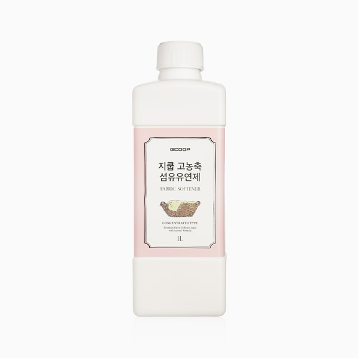

지쿱 고농축 주방세제
식물 유래 포뮬러의 고농축 안심 주방세제
- 회원가입 없이 회원가
- 지쿱 본사 정품 직접 발송
- 5만 원 이상 무료배송
지쿱 고농축 주방세제 상세 설명 · 원료와 특징
식물유래 포뮬러로 만든 프리미엄 고농축 주방세제 지쿱 고농축 주방세제 식물 유래 포뮬러의 사용은 자연을 생각하는 것뿐만 아니라 우리 가족의 건강을 지키는 것 제품 특징 자연 유래 세제 (SAFETY) - 탁월한 헹굼력으로 유아용 젖병 및 식기 세척, 과일 세척 등 안전하게 사용할 수 있습니다.
식물 유래 포뮬러로 기분 좋은 사용감 (NATURAL) - 식물 유래 포뮬러(코코넛 오일 유래 성분, 사탕수수 유래 성분), 매실추출물, 유자추출물, 알로에베라겔추출물, 쌀미강추출물 함유 식물성 계면활성제 사용 (ECO & RESPONSIBLE) - 쉽게 생분해되어 환경을 보호해 줍니다.
무첨가(FREE) - 無방부제(14종), 無중금속, 無알러지유발물질(24종), 無프탈레이트(6종), 無형광증백제, 無인산염, 無디옥산, 無메틸알코올, 無글루타알데히드, 無석유계계면활성제, 無인공향, 無동물성원료, 無색소 안전한 성분(SAFETY) - 민감한 유아부터 온 가족 사용을 위힌 피부자극 테스트 완료 독일 더마 테스트 / 국내 피부자극 테스트 완료 (사용 조건 인체 피부자극 시험결과 무자극)
전 성분 공개 - 믿고 쓸 수 있는 안전하고 깨끗한 성분만을 사용하였습니다.
주요 성분 코코넛 유래 계면 활성제 코코넛오일에서 유래한 천연 세정 성분 사탕수수 유래 계면 활성제 사탕수수에서 유래한 천연 세정 성분 탄산칼륨 식품 첨가물 원료이며 유해 화학물질 대신 비누화하는 성분 탄산수소나트륨 식품 첨가물 원료이며 세척용으로 많이 쓰임 알로에베라겔 피부를 부드럽고 유연하게 하며 보습에 도움 매실추출물 매실나무의 열매에서 추출하여 얻은 성분으로 보습력 증진으로 건조감 예방
유자추출물 유자 열매에서 추출한 성분으로 비타민C, 비타민B 등의 성분 함유. 컨디셔닝 역할로 피부에 활력을 부여해 줌 쌀미강추출물 쌀에서 추출하여 얻은 성분으로 피부결을 부드럽고 유연하게 해주며 활력과 생기를 부여해 줌 꼭!
식물 유래 주방세제 여야 합니다.
지쿱 고농축 주방세제는 식물 유래 성분만으로 만든 안심 주방 세제입니다.
식물 유래 주방 세제 지쿱 고농축 주방세제는 식물성 계면활성제 사용으로 안전하고 안심하게 사용하실 수 있습니다.
주방 세제는 내 피부, 우리 가족의 입으로 들어갈 수 있습니다. 하루 세끼 우리 가족의 소중한 식탁과 소중한 피부를 위해 엄격한 기준과 제한으로 고민하고 연구하여 담아냈습니다.
식물 유래 주방세제는 먹는 음식 세척에 사용할 만큼 안전성이 입증된 성분만을 사용할 수 있습니다.
식물 유래 포뮬러(코코넛 오일 유래 성분, 사탕수수 유래 성분)로 안전하게 사용하실 수 있습니다.
향료, 방부제, 색소, 형광증백제, 산화방지제 등 유해 화학물질을 일체 첨가하지 않았습니다.
거품이 적어 자연에서 쉽게 생분해됩니다.
물 오염의 원인인 페놀과 합성세제를 70% 이상 사용한 세제를 사용할 경우, 사람의 피부에 침투하고 체내에 농축되면 피부질환, 간 기능장애, 각종 알레르기의 원인, 아토피, 주부습진, 발진, 가려움, 각종 피부질환, 소화기 질환, 생리통에 원인이 되기도 합니다.
지쿱 에코어메이트 리퀴드 솝 자연 친화적인 지쿱 고농축 주방세제 자사 일반 주방세제 계면 활성제 사탕수수와 같은 당에서 추출 석유추출물이며 황산, 질산, 염산 등의 화학물질에서 추출 성분 구성 식품 성분으로만 구성 됨 (순 비누 성분 포함) 소듐코세스설페이트 코코-글루코사이드 코코넛오일에서 유래한 세정성분 알킬폴리글루코사이드 사탕수수에서 추출한 천연 계면 활성제 성분 코코베타인과 블렌딩하여 사용 시 더욱 효과적임
거품 세제의 주요성분 피부를 통해 쉽게 침투하여 피부에 5일 정도 머무르며 피부에 자극을 줌 ALES(암모늄라우레스설페이트) ALS(암모늄라우릴설페이트) 영향 피부자극 없음 식품 첨가물로 유해성분 없음 피부 자극은 적음 수생 식물 및 수생 생물에 유해 물질 반응 알러지 유발 및 피부 층을 손상시킴 피부에 쉽게 침투하여 피부 자극 유발 쉽게 분해 되지 않고 지하수를 오염시켜 환경을 파괴 세정력 일반 세제보다 떨어짐
세정력은 좋으며 자연에서 생분해 되어 친환경적임 세정력 뛰어남, 많은 헹굼이 필요함 잔류 세제 거의 없음 미세하게 있음 약간 있음 알칼리 약알칼리 중성 브랜드 스토리 일상생활에 효율적이고 편리한 제품을 공급하며 착한 소비를 지향하는 생활 전문 브랜드입니다.
매일 사용하는 일상 제품은 언제 어디서든 믿고 안심할 수 있어야 합니다. 라이프스타일에 맞는 편리한 제품을 만나보세요.
사용 방법 식기 설거지 수세미에 1~2회 펌핑을 한 후 그릇을 문질러 닦아주고 흐르는 물에 깨끗하게 헹궈 주세요.
(기름기 있는 식기는 키친타월로 한번 닦은 후 설거지 해줍니다.) 과일, 채소 세정제 물에 1~2회 펌핑하여 잘 풀어 과일, 채소를 담아 씻고 흐르는 물에 깨끗하게 헹궈 주세요.
젖병 세정제 젖병을 미지근한 물에 담가 젖병 솔에 펌핑하여 닦은 후 흐르는 물에 깨끗하게 헹궈 주세요.
각종 인증 사항 비코프인증 획득!
비코프인증(B-Corp Certified) 이란?
B-Corp은 비즈니스를 통해 사회 환경적 문제를 해결하고 사회에 긍정적인 영향을 끼치는 기업을 확대하기 위해서 2007년 BLab (미국비영리 조직)이 만든 글로벌 사회적 기업 인증 제도입니다.
독일 피부과학연구소 더마테스트(dermatest) 엑셀런트 획득!
세계 최고 독일 피부과학연구소 더마테스트(dermatest)에 24시간, 48시간, 72시간 인체 피부 적용 실험을 의뢰 “피부자극없음”인 Excellent를 획득하였습니다.
지쿱 본사 제품 상세페이지 내용을 옮겨 정리했어요.
상품정보제공고시
| 품명 및 모델명 | 지쿱 고농축 주방 세제 |
|---|---|
| 용량 또는 중량 | 1L |
| 법에 의한 인증ㆍ허가 등을 받았음을 확인할 수 있는 경우 그에 대한 사항 | 위생용품 1종 세척제 |
| 사용방법 | 1. 식기설거지 - 수세미에 1∽2회 펌핑을 한 후 그릇을 문질러 닦아주고 흐르는 물에 깨끗하게 헹궈 주세요. (기름기 있는 식기는 키친타월로 한번 닦은 후 설거지 해줍니다.) 2. 과일, 채소 세정제 - 물에 1∽2회 펌핑하여 잘 풀어 과일, 채소를 담아 씻고 흐르는 물에 깨끗하게 헹궈 주세요. 3. 젖병 세정제 - 젖병을 미지근한 물에 담가 젖병 솔에 펌핑하여 닦은 후 흐르는 물에 깨끗하게 헹궈 주세요. |
| 전성분 | 정제수,라우릴 에테르 에톡시 설페이트 나트륨,알킬디메틸아민옥사이드,알킬폴리글루코시드,글리세린,구연산,탄산칼륨,탄산수소나트륨,스피어민트유,알로에베라겔건조분말,매실액상과당,유차추출물,살겨(미강)유 추출물 |
| 사용상 주의사항 | [과일, 야채 세척] 표준 사용량으로 희석한 세척 액에 과일, 야채를 담가서 세척하십시오. 희석한 세척 액에 과일, 야채를 5분 이상 담그지 마십시오. 세척 후에는 반드시 음용에 적합한 물로 씻어 주십시오. 이때 흐르는 물을 사용할 때에는 30초 이상, 흐르지 않는 물을 사용 할 때에는 물을 교환하여 2회 이상 씻어 주십시오. [식기, 조리기구 세척] 수세미에 적당량을 취한 후 거품을 발생시켜 식기, 조리기구를 세척하십시오. 세척 후에는 세척제가 잔류하지 않도록 반드시 음용에 적합한 물로 씻어 주십시오. 이때 흐르는 물을 사용할 때에는 5초 이상, 흐르지 않는 물을 사용 할 때에는 물을 교환하여 2회 이상 씻어 주십시오. |
| 보관 및 취급시 주의사항 | 1. 용도 이외 또는 표준사용량 이상으로 사용하지 마십시오. 2. 어린이의 손에 닿지 않는 곳에 보관하십시오. 3. 민감한 피부이거나 장시간 사용할 경우 피부트러블이 발생 할 수 있으니 고무장갑을 착용하여 주시고, 사용 후에는 물로 손을 깨끗이 씻어 주십시오. 4. 의류에 묻으면 변색, 탈색, 얼룩 등이 생길 수 있으니 주의하십시오. 5. 여름철에는 온도가 높은 곳을 피아고, 겨울철에는 얼지않도록 0°C 이상 실온에 보관하십시오. (제품 고유의 특성으로 인해 침전물이 생길수 있으나 품질에는 이상이 없습니다.) 6. 사용 후 충분한 물로 헹궈 주세요. 7. 차량이나 가정에서 넘어진 채로 두시면 액이 흘러나올수 있으므로 주의하십시오. * 환경을 생각하시어 식기나 조리 기구에 기름기가 많은 경우 기름을 닦아낸 후 사용 하십시오. |
| 제조일자 및 사용기한 | 제품에 별도 표기 |
| 판매원 | 제너럴바이오㈜ |
| 제조국 또는 원산지 | 대한민국 |
| 제조자, 수입품의 경우 수입자를 함께 표기 | 제너럴바이오㈜ |
| 품질 보증 기준(A/S 관련사항) | 본 상품의 품질보증 및 피해보상에 관한 사항은 관련 법률 및 공정거래위원회 고시 [소비자분쟁해결기준]에 따릅니다. |
| 소비자 상담 문의 | 카카오톡으로 문의 주시면 지쿱 본사로 접수해 드립니다. |
생활제품 다른 제품
배송·교환·반품
지쿱 본사에서 직접 발송해요. 50,000원 이상 주문 시 무료배송, 50,000원 미만은 배송비 2,500원이에요. A/S·교환·반품은 카카오톡으로 문의 주시면 지쿱 본사로 접수해 드려요.